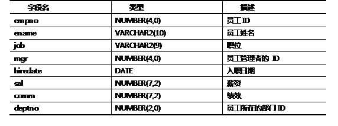
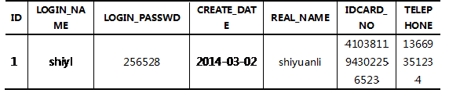

1 下列select语句输出的结果是？
有职员表 emp，表结构如表－1所示：
表－1 职员表emp 信息
emp 表中的示例数据如图－1所示：

图－1
对于emp表或者dual表，执行如下查询，请描述各查询的结果。
1．selectjob, length(job) from emp order by job;
2．select ename || ' earns $' || sal ||' monthly but wants $' || sal * 3 as“Dream Salary”from emp;
3．select empno, ename from emp where upper (job)= 'clerk';
4．selectSUBSTR('Doctor Who', 1, 6) from dual;
5．select TRIM('半' FROM '半月二更半') AS"上联"from dual;
6．select TRIM (leading '半' FROM '半月二更半') AS "上联"from dual;
7．select TRIM (trailing '半' FROM '半月二更半') AS "上联"from dual;
8．selectLPAD('TARDIS', 10, '*') from dual;
9．selectLPAD('TARDIS', 3, '*') from dual;
10．select * from emp where length(ename) = 5;
2 关于类型定义Number(9,2)，下列说法正确的是
A．整数部分9位，小数部分2位，共11位
B．整数部分7位，小数部分2位，共9位
C．整数部分6位，小数点一位，小数部分2位，共9位
D．整数部分5位，小数部分2位，共7位
3 下列select语句输出的结果是？
对于emp表或者dual表，执行如下查询，请描述各查询的结果。
1．select ename , sal , round(sal*1.08) from emp;
2．selectmod(11,4) from dual;
3．selecttrunc(123.123,-1)from dual;
4．select floor(sysdate-hiredate) as "入职天数",ename from emp;
4 简述date和timestamp的区别
5 按要求完成插入语句（包含日期类型）
向Unit01课后练习中，所创建的t_account表中插入一条记录，该记录的数据如表-2所示。
表- 2插入数据明细
6 按指定输出格式写出select语句（包含日期类型）
1．按照“2009年4月11日 20时35分10秒”格式显示系统时间。
2．构造查询语句，产生类似于下面形式的结果：
NAME HIREDATE REVIEW
--------------------------------------------------------------------------
ALLEN 1980年12月17日 1980/12/17
7 下列select语句输出的结果是？
对于emp表或者dual表，执行如下查询，请描述各查询的结果。
1．select * from emp where extract(year from hiredate) = '1987';
2．select ename, last_day(hiredate) from emp;
3．select next_day(sysdate, 7) from dual;
4．select ename, add_months(hiredate, 3) from emp;
5．select ename, months_between(sysdate, hiredate) from emp;
6．select greatest(to_date('20070101', 'yyyymmdd'),hiredate) from emp;
8 已知表结构如下，按要求完成select语句
现有数据表Customer，其结构如表－3所示：
表－3 顾客表Customer 信息
构造SQL语句，列出Customer数据表中生日未提供的客户记录。
9 已知表结构如下，按要求完成select语句
对于emp表，构造SQL语句，查询员工编码empno，姓名ename，以及月收入(薪水 + 奖金)。注意：有的员工暂时没有奖金，即，如果comm列为null，则按照数值0计算。
10 已知表结构如下，按要求完成select语句
查询emp表，列出员工的编码、姓名和入职时间。
要求：如果入职时间为null，则显示'not available'；如果入职时间不为null，则按照yyyy-mm-dd格式显示。